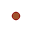

<!DOCTYPE html>
<html lang="en">

<head>
  <meta charset="UTF-8">
  <meta http-equiv="X-UA-Compatible" content="IE=edge">
  <meta name="viewport" content="width=device-width, initial-scale=1.0, maximum-scale=1.0, user-scalable=no" />
  <title>WWTPs in Scotland</title>
  <!--Including leaflet in the application. Always load CSS file before JS file-->
  <link rel="stylesheet" href="leaflet/leaflet.css" />
  <link rel="stylesheet" href="style.css" />
  <script src="leaflet/leaflet.js"></script>
  <script src="treatmentplant.js"></script>
</head>

<body>
  <!--Creating the map container and is always a <div>-->
  <div id="map"></div>

  <!--Script files goes at the bottom of the body section-->
  <script>
    var map = L.map('map', {
      center: [56.33, -4.15],
      zoom: 7
    });

    // adding first basemap to map
    var Esri_WorldGrayCanvas = L.tileLayer('https://server.arcgisonline.com/ArcGIS/rest/services/Canvas/World_Light_Gray_Base/MapServer/tile/{z}/{y}/{x}', {
	attribution: 'Tiles &copy; Esri &mdash; Esri, DeLorme, NAVTEQ',
	maxZoom: 16
});
    Esri_WorldGrayCanvas.addTo(map);

    // adding second basemap to map
    var CartoDB_DarkMatter = L.tileLayer('https://{s}.basemaps.cartocdn.com/dark_all/{z}/{x}/{y}{r}.png', {
      attribution: '&copy; <a href="https://www.openstreetmap.org/copyright">OpenStreetMap</a> contributors &copy; <a href="https://carto.com/attributions">CARTO</a>',
      subdomains: 'abcd',
      maxZoom: 20
    });
    CartoDB_DarkMatter.addTo(map);

    // adding treatmentplant layer to the map and convert markers to point features, pointToLayer function
    var style = {
      fillColor: "#A0522D",
      color: "#8B0000",
      weight: 1,
      opacity: 1,
      fillOpacity: 0.80
    };

    function forEachFeature(feature, layer) {
      var popupContent = '<div class="popup"><b>Population served</b> ' + '<br>' + feature.properties.POP_SERVED + '</div>'
      layer.bindTooltip(feature.properties.WWTP_NAME, {
        direction: 'bottom',
        offset: L.point(10, 30),
        sticky: true,
        opacity: 0.9
      });
      layer.bindPopup(popupContent);
    }

    L.geoJson(treatmentplant, {
      onEachFeature: forEachFeature,
      pointToLayer: function (feature, latlng) {
        var POP_SERVED = feature.properties.POP_SERVED;
        if (POP_SERVED < 111668) {
          style.radius = 5;
        } else if (POP_SERVED < 334998) {
          style.radius = 10;
        } else {
          style.radius = 17;
        }

        return L.circleMarker(latlng, style);
      }
    }).addTo(map);

    // basemap controls
    var basemaps = {
      "ESRI": Esri_WorldGrayCanvas,
      "CartoDB": CartoDB_DarkMatter
    };

    L.control.layers(basemaps).addTo(map);

    // adding a scale
    var scale = L.control.scale();
    scale.addTo(map);

    L.control.scale({ position: 'bottomleft' });

    // adding legend and legend elements
    var legend = L.control({ position: "topright" });
    legend.onAdd = function (map) {
      var div = L.DomUtil.create("div", "legend");
      div.innerHTML =
        '<b>WWTPs in Scotland</b><br>by Population Served<br>' +
        '<small>Population served</small><br>' +
        '&#160;334998+<br>' +
        '&#160;111668 - 334998<br>' +
        '&#160;0 - 111668<br>';
      return div;
    };
    legend.addTo(map);


  </script>
</body>

</html>
